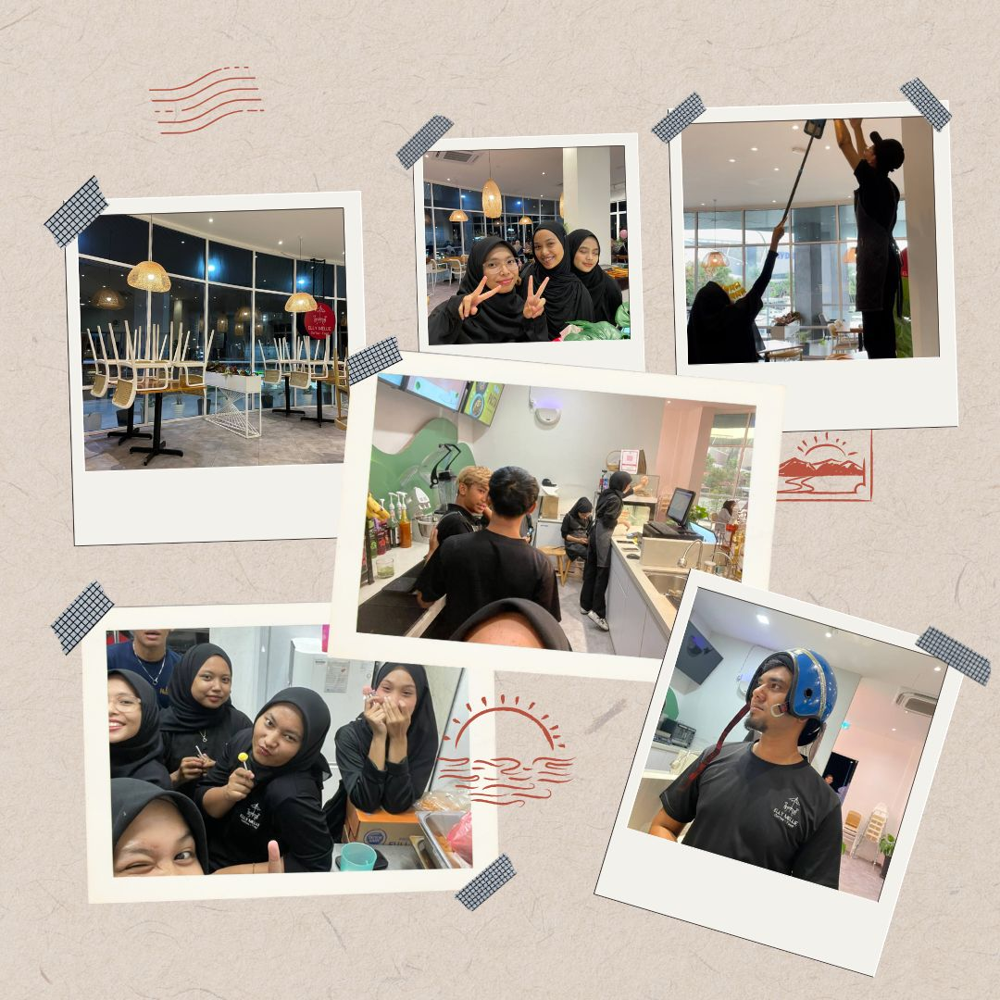
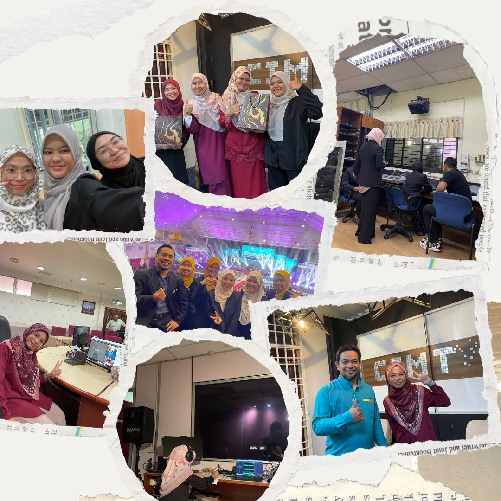

WORK EXPERIENCE
I worked at Elly Melly Cafe during my semester breaks. This was my first experience working in the food and beverage (F&B) industry, and everything felt new to me. I had no previous experience working at the front desk so it was quite challenging at first.
Throughout my time working at the cafe, I gained a lot of valuable experience. I learned how to handle different customer attitudes, communicate politely, and serve food and drinks properly in front of customers. I also learned how to manage orders, stay calm during busy hours and work well with my colleagues. Not only that but I had the chance to meet new people from different age groups. From there, I learned many things about communication and real-life situations. The working environment was enjoyable, and my coworkers were friendly which made the experience meaningful.

INTERNSHIP EXPERIENCE
My internship experience during last semester was honestly very enjoyable. I did my internship at Politeknik Seberang Perai (PSP) under the ICT Department. At first, everything felt a bit confusing, but slowly I started to understand how things work. During my internship, I learned a lot about networking, wiring, and daily ICT operations. I was exposed to handling patch cords, fibre optic cables, and also learned basic troubleshooting for internet connection problems. Sometimes we had to fix internet issues in student hostels, classrooms, and offices, so it really taught me how to handle real situations.
From this internship, I finally understood the real working life, especially in the education sector. It was different from what we learn in class, but it helped me see how important teamwork and responsibility are. My supervisor and the staff there were very kind and patient. They guided me well and were always willing to teach me, which made my internship experience more comfortable and meaningful.

SKILLS GAINED
Here are the skills I gained from my experience:
- Communication skills
- Customer service skills
- Basic networking knowledge
- Internet troubleshooting
- Teamwork
- Time management
- Problem-solving skills